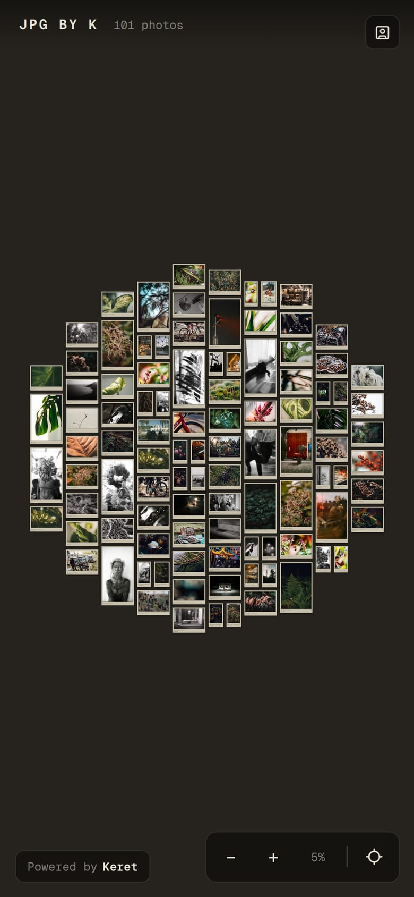
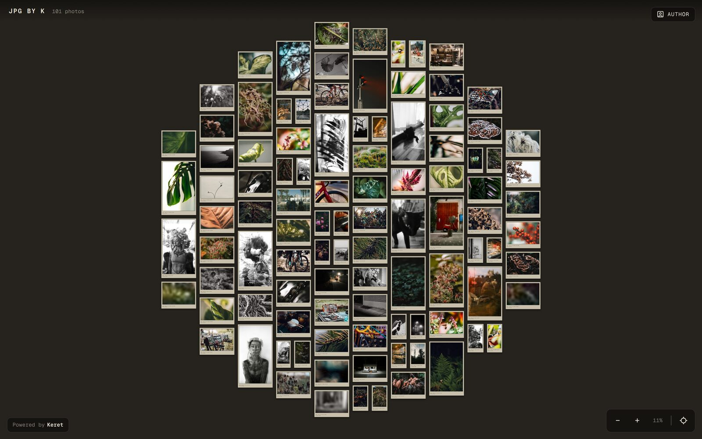
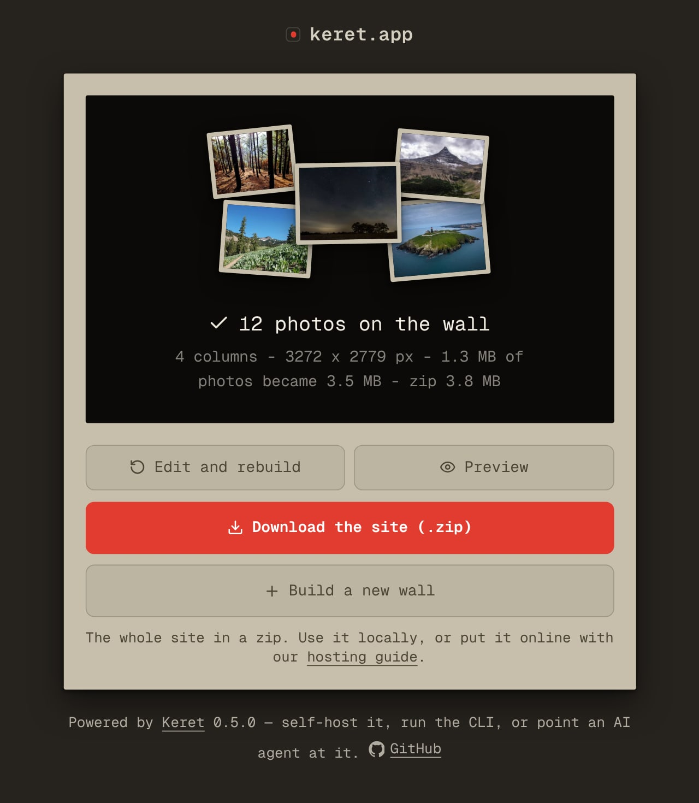
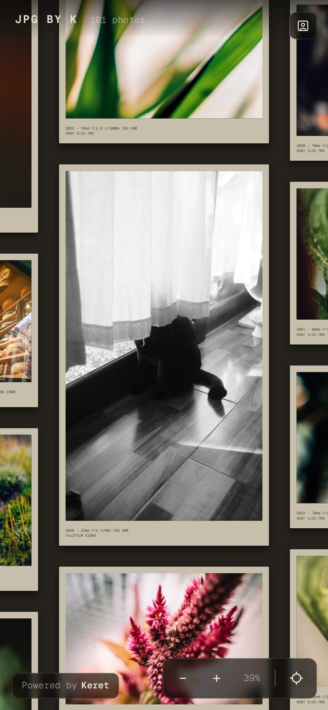

Free · no account · nothing uploaded
Your photographs, on one wall you can pan and zoom.
keret hangs each photograph at its real aspect ratio, captions it from the file’s own EXIF, and writes one static page. Drop a folder in a browser tab, or run one command.
Open the builder Walk a live wall
Published copies are re-encoded without EXIF, so GPS never ships.

What your wall gets
Four things, and none of them need a server.
-
One photo, one frame
Portrait, landscape, panorama: each frame takes the photograph’s own aspect ratio, so nothing is cropped to fit a grid.
-
Captions from the file
Date, lens, shutter, ISO and camera come out of the photograph’s own EXIF and are set under the frame. You type nothing.
-
Static files, no bill
The build writes HTML, images and crawler files. No database, no PHP, no subscription, nothing to keep running.
-
Yours, and portable
A folder you copy to any host and move again later, with a “Powered by Keret” line you can rewrite or remove.
Why this exists
Every wall I tried was a CMS plugin I had to keep running, a grid that cropped my photographs to squares, or a hosted gallery that charged a subscription to show my own pictures.
keret is the engine of my own photo wall, pulled out into a tool: photographs in, one page out. Hundreds of them on one canvas you drag to pan and pinch to zoom, every frame at the photograph’s own shape, nothing cropped.

Two ways to run it
Drop a folder — or a handful of loose photographs — and the tab decodes them, reads their EXIF and lays the wall out while you watch. Set the title and the photographer, pick the typeface, check the preview (it is the real engine, not a mockup), then take the finished site as a zip.
The zip holds the page, the photographs at three sizes, the typeface and the social card: unzip it on any static host and the wall is online. Nothing is uploaded, and nothing has to keep running afterwards.

Clone the repository and run one command. The first run asks four questions — title, description, address, photographer — and writes wall.config.json beside the photographs, so every later run reuses it. --yes skips the questions; --check lays the wall out and writes nothing.
One dependency (sharp) and Node 18.17 or newer. It is the same engine the browser runs, with a real image encoder: point it at any folder, and dist/ comes out ready to serve.
git clone https://github.com/nomorenamesstudio/keret.git
cd keret && npm install
node gen.js --yes # photos/ in, dist/ out
npx --yes serve distInstall keret, a photo wall builder: https://github.com/nomorenamesstudio/keret
Clone it and run npm install.
Ask me which folder my photographs are in — do not guess the path. Then ask for
the wall title, the photographer name, the site URL and the typeface, write them
into wall.config.json and author.json, and run `node gen.js`.
When the build finishes, read docs/HOSTING.md and walk me through publishing
dist/ to the host I pick, custom domain included.It works on a phone
Pan, pinch, double-tap and fit, on the device where most photographs are actually looked at.
The mat grain is a PNG, not a filter. An SVG turbulence filter per frame is what made a big wall crawl on a phone in 0.4; frames now carry a background and a caption and nothing else, and the wall scrolls.
It was tested up to a thousand photographs: a generated 1,000-photo wall, laid out, fitted, panned to every edge on a phone, captions checked at each zoom. That set came out 28 columns and 20,168 × 19,918 pixels — square, because the column count is arithmetic, not a guess. A few hundred photographs sit well inside it.
A phone downloads only what it draws: every photograph ships at 128, 256, 512 and 1024 pixels plus the full copy, and the wall upgrades a frame as you zoom into it.

Common questions
Is keret really free?
Yes. MIT license, no account, no paid tier and no upsell. The only cost is hosting, and static files run on a free tier of GitHub Pages, Cloudflare Pages or Netlify.
Do my photographs get uploaded?
No. The builder decodes them in the browser tab and builds the zip there, and the command line does the same work on your machine. There is nowhere to send them.
Where can I host the wall?
Any static host: GitHub Pages, Cloudflare Pages, Netlify or your own nginx. The hosting guide covers all four, custom domain included.
Does the published page give away location data?
No. Every published copy is re-encoded without EXIF, so GPS coordinates cannot ship — the wall carries the caption text and nothing else.
Your photographs. One wall. No account.
Drop a folder in the browser and take the zip with you, or clone the repository and build the same wall on your own machine.